芳仁牙醫診所 LINE 官方帳號
七則訊息的整包規格 2026-09-05
這一頁是給廠商看的：這個帳號上該有哪幾則訊息、
每一則什麼時候送、送給誰、由誰送，以及成品長什麼樣。
七則全部定稿了，Flex Message 的 JSON、圖檔與網址都在下面。
每一則各自還有一頁更詳細的規格（有量測與逐句的理由），從標題底下的連結進去。
三件事先講清楚，其餘都是細節
① 評價邀約那一則，先不要送。
現在那張卡是「願意推薦 → 一條路、不願意 → 另一條路」，
如果只有前者通向 Google 評論，那是 Google 商家檔案明文禁止的
評論篩選（review gating）。那兩顆按鈕實際連到哪裡，只有你們知道
—— 這是要問，不是說你們違規了。答案出來之前，新舊兩版都先擱著。
② 約診紀錄查詢那一則，日期現在真的被截掉了。
截圖上是「2026/08/20 15:45 星⋯」。成因是那個 text 設了
maxLines: 1；拿掉它、改成 wrap: true 就好
—— 卡片本來就會自己折行。這是七則裡唯一一件正在出錯的事。
③ 我們手上沒有「這個帳號會自動送出哪幾則」的清單。
下面這七則是從診所給的截圖盤出來的，而截圖是抽樣不是清單 ——
盤點已經漏過兩次（滿意度調查卡、預約成功與查詢）。
請給一份完整的：每一則的觸發條件與送出時機。
總表
「誰送」是這張表最重要的一欄 —— 綠色那兩則診所自己在後台就設得完，
不必動到你們；其餘五則是你們的系統在送。
| 訊息 | 什麼時候送 | 誰送 | 型別 |
|---|
| ① 招呼圖卡 | 加入好友的當下 |
診所後台
（招呼訊息） | Flex |
| ② 自動回應 | 病人打任何一句字 |
診所後台
（一律回應） | 純文字 |
| ③ 綁定完成 | 綁定成功之後 | 你們 | Flex |
| ④ 約診提醒 | 看診前 48 小時 | 你們
（唯一計費） | Flex |
| ⑤ 預約成功 | 約診成立的當下 | 你們 | Flex |
| ⑤ 約診紀錄查詢 | 病人點選單那一格 | 你們 | Flex 輪播 |
| ⑥ 取消／改期 | 病人點「預約改期」 | 你們 | Flex ×3 |
| ⑦ 評價邀約 | 看診後（時機請告訴我們） |
你們 | Flex |
| ⑧ 臨時休診 | 縣府宣布之後 |
現在是診所人工一個一個貼 | 純文字
（或 Flex） |
① 招呼圖卡
加入好友的當下，一次 — 完整規格
- 什麼時候
- 病人把這個帳號加為好友的當下，只送這一次。
- 送給誰
- 新加入的好友。
- 誰送
- 診所後台
LINE Official Account Manager → 加入好友的招呼訊息。
- 型別
- Flex bubble：頭圖 ＋ 兩顆可點的 box（不是 button，因為要放 logo）。
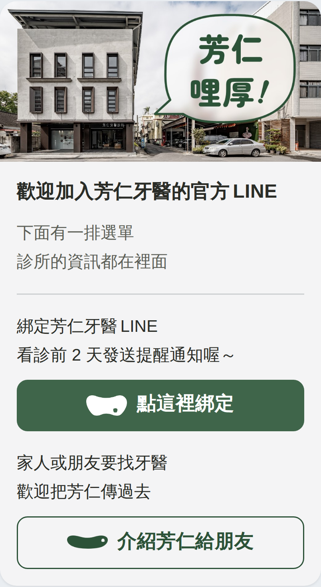
↑ 病人手機上的真實大小（卡片 268px 寬）。⚠ 近似，不是 LINE 自己的算繪。
Flex 的 JSON welcome-card.json
頭圖 hero-welcome.jpg（1024×512）
兩顆 logo mark-white.png（綁定）／mark-green.png（介紹）
⚠ 這一則要你們回答的
後台的「招呼訊息」送不送得出 Flex Message？
後台那個編輯介面的型別下拉裡沒有 Flex 那一格 ——
如果只能送純文字與圖文訊息，這一則就要退回文字＋一張圖的版本，
卡片與兩顆按鈕都會消失。這一題會改變成品的長相，請先答。
⚠ 另外兩件是診所這一側的，記在這裡免得忘了
・「介紹芳仁給朋友」那顆用的是推薦官方帳號的深連結
（line.me/R/nv/recommendOA/@445rpiiv），還沒有實機測過。
・這一張寫著「看診前2 天發送提醒通知」，而 ④ 提醒卡寫的是
「看診前 48 小時」—— 兩則的講法目前不一致，
要不要統一是診所要決定的（那一句是院長自己寫的字）。
② 自動回應
病人在聊天室打任何一句字 — 完整規格
- 什麼時候
- 病人打任何一句字，每打一句就送一次。
- 送給誰
- 打字的那一個人。
- 誰送
- 診所後台
自動回應訊息 → 新增一則 → 回應設定選「一律回應」（不設關鍵字、不設時段）。
- 型別
- 純文字 —— 七則裡唯一不是 Flex 的一則。
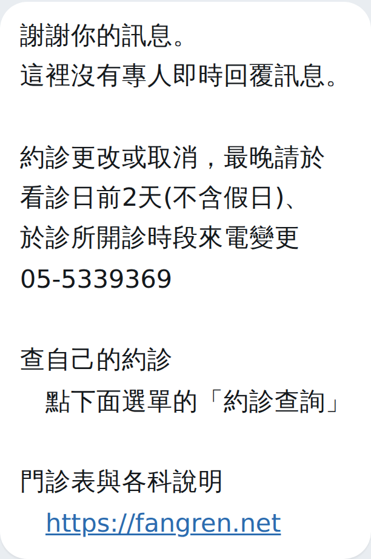
↑ 純文字泡泡（寬度由最長那一行決定）。要貼進後台的字在
那一頁，有複製鈕。
要貼進後台的字 auto-reply.txt（純文字，沒有 JSON）
這一則診所自己設，不必動到你們 —— 這是刻意的決定：
留在後台，字就留在診所自己手上，改一個錯字不必找人。
做成 Flex 圖卡會漂亮一點，但每次改字都要走一趟。
⚠ 但有一件要你們確認
我們查到（二手資料）：後台的「自動回應訊息」開著的時候，
會把病人打的字攔下來自己回，不轉給你們的 webhook；
按鈕（postback）那條不受影響、照樣走你們。
如果這是真的，這一則就一定要留在後台（不然會兩邊搶著回）。
請確認一句。
③ 綁定完成
病人綁定成功之後 — 完整規格
- 什麼時候
- 病人在綁定頁按下完成、綁定成功的當下。
- 送給誰
- 剛綁定的那一個帳號。
- 誰送
- 你們
現在你們的系統會以病人的身分寫一則「✅ 09xxxxxxxx 綁定成功！」進聊天室。
- 型別
- Flex bubble：頭圖 ＋ 兩塊淡底方塊（警示、改約）。
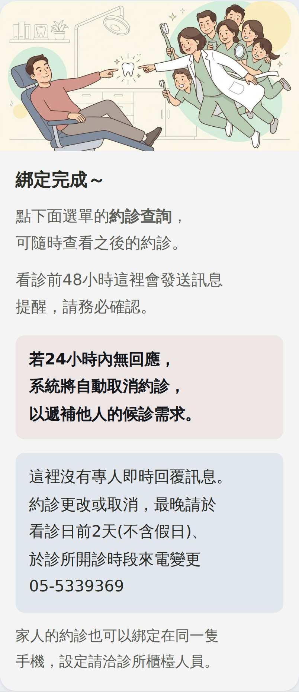
↑ 定稿。兩塊淡底在 JSON 裡是合成後的實色
（#EEE5E6／#E2E8EF），不是半透明。
Flex 的 JSON bind-done-card.json
頭圖 hero-bind.jpg（1024×512）
退路 送不出 Flex 的話有一份
一字不差的純文字版，
畫在
那一頁最底下
⚠ 這一則要你們配合的
那句觸發字串裡有電話號碼。
「✅ 09xxxxxxxx 綁定成功！」每個人的號碼都不一樣，
而後台的關鍵字回應是完全一致比對，抓不到。
→ 請改成不含號碼的固定字串，或這一則直接由你們的系統推播出去
（那樣更好，就不必繞後台）。
④ 約診提醒
看診前 48 小時 — 完整規格
- 什麼時候
- 看診前 48 小時（時機沒有要改）。
- 送給誰
- 綁定了那一次約診的帳號。⚠ 讀的人不見得是病人本人
—— 小孩的約診常常綁在爸媽或阿嬤的手機上，所以卡上要印姓名。
- 誰送
- 你們
七則裡唯一要花錢的一則（主動推播才計費），也是整個帳號曝光最高的訊息。
- 型別
- Flex bubble：頭圖 ＋ 一句話開口請他回覆 ＋ 三顆按鈕
（確認／不來／打電話）。
- 變數
{{patient}} {{date}}
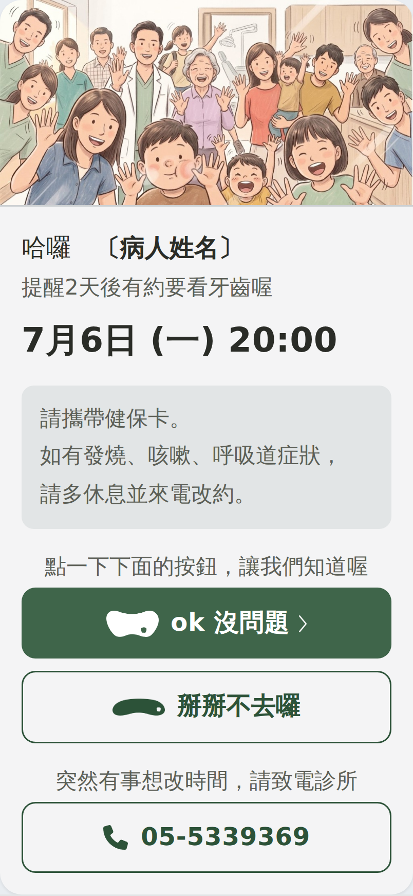
↑ 定稿。有變數的那一行不能手動斷行（姓名幾個字我們不知道），
交給 wrap: true 自己折。
Flex 的 JSON reminder-card.json
頭圖 hero-remind.jpg（1024×512）
四顆 logo mark-white.png／mark-chev-white.png（主鈕）、
mark-nogo.png（不來）、mark-tel.png（電話）
⚠⚠ 這一則有兩題會出事，不是美感問題
① 那 24 小時的計時，會不會跳過休診日？
卡上寫著「24 小時沒回應會自動取消並遞補」。
週一的約診 → 提醒在週六發 → 期限落在週日，
而診所週六日休診、電話沒有人接 ——
病人是在完全沒有辦法回應的時段被自動取消的。
可不可以設成只在開診時段計時？
② 被自動取消的時候，會不會再發一則通知病人？
不通知的話，他是到了門口才知道。
⚠ 另外：reminder-card.json 裡的 margin 數字和規格頁上量到的
px 不會逐字相同，那是對的 —— 規格頁量的是墨到墨，
而行高 1.7 在字面下方藏了約 4.8px 的半行距。要對的是畫出來的距離。
⑤ 預約成功 ＋ 約診紀錄查詢
同一張卡的兩個狀態 — 完整規格
- 預約成功
- 約診成立的當下自動送出，單張。
- 紀錄查詢
- 病人點圖文選單的「約診紀錄查詢」之後回的，
輪播、一個約診一張、可以左右滑。
- 送給誰
- 綁定了那個約診的帳號。⚠ 輪播每一張都要印姓名
—— 一支手機綁得到好幾個家人。
- 誰送
- 你們
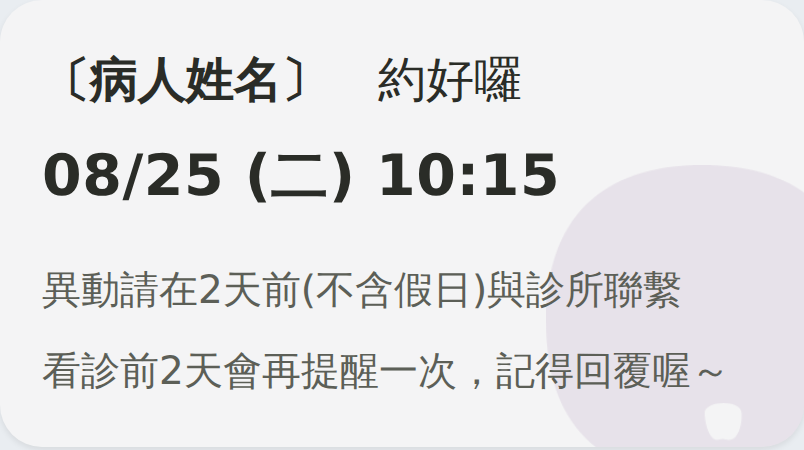
↑ 預約成功（單張，268px）。
↑ 約診紀錄查詢（輪播）。輪播的卡比單張窄 23%
—— 我們量到的是單張 348.7、輪播 269.3，左右內距兩種都是 22.3（一點都沒收），
所以可用寬度掉了 26%。日期就是在這裡被截斷的。 ⚠ 這一條可以左右滑。
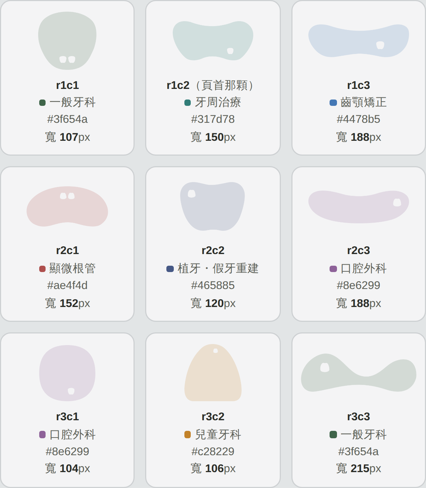
↑ 每一張卡的浮水印不一樣：九個形狀、各配一支診所站上已經在用的科別色。
九顆的寬度各不相同（有四種長寬比），是按墨的面積算出來讓它們看起來一樣重的，
不可以改成同寬。寬度只有一份出處：wm-sizes.json。
Flex 的 JSON booked-card.json（兩則 ＋ 九顆的對照表）
浮水印 wm-r{1,2,3}c{1,2,3}-12.png（九張）
寬度表 wm-sizes.json
⚠⚠ 這一則有一件正在出錯
日期被截斷：截圖上是「2026/08/20 15:45 星⋯」。
成因是那個 text 設了 maxLines: 1。
→ 拿掉 maxLines、改成 wrap: true。
放得下就一行、放不下就兩行，哪一種寬度都不會有字消失。
⚠ 只把字改短救不了 —— 我們到現在還沒有一張病人手機的截圖可以確定卡片實寬
（所有判斷都建立在 268px 上，而那是推導值）。折行才是治本的。
⚠ 順帶：同一個帳號現在有兩種日期格式 ——
查詢那張寫 2026/08/20 15:45 星期四，
預約成功與提醒卡寫 2026/08/25 (二) 10:15。
最長的那一種正好被放進最窄的卡裡。
要問你們的三題
① 「預約狀態」總共有幾種值、各是什麼意思、和 ④ 提醒卡那顆確認鈕是不是同一個欄位？
② 日期那一格能不能拆成欄位（月／日／星期／時間分開）？拆得開的話版面可以做得更好讀。
③ 輪播最多幾張、超過怎麼辦？（LINE 的上限是 12 張，常來的病人不會只有三筆）
④ 浮水印能不能按 (月＋日) % 9 算？
這樣同一筆約診查幾次都是同一顆、取消一筆也不影響其他筆。
⑥ 取消／改期那一段對話
一句確認、一次回答、一則結果 — 完整規格
- 什麼時候
- 病人點圖文選單的「預約改期」→ 系統回一張確認卡 →
他按了其中一顆 → 回對應的結果。
- 送給誰
- 按的那一個帳號。
- 誰送
- 你們 共三則：確認卡 ＋ 兩則結果。
- 型別
- Flex（現在是 LINE 官方的
confirm 範本，
樣式一個像素都改不了）。
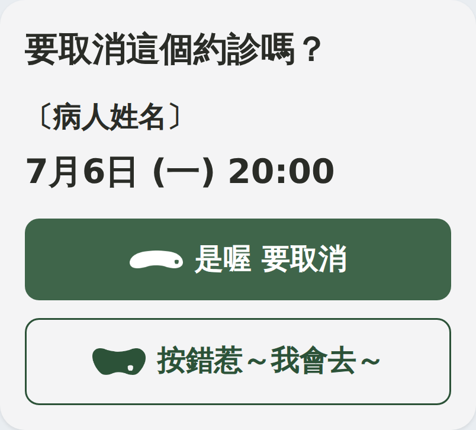
↑ 確認卡。那一層確認沒有要拿掉（防誤按的理由成立），
改的是它問得夠不夠清楚 —— 現在沒寫是誰、也沒寫哪一天。
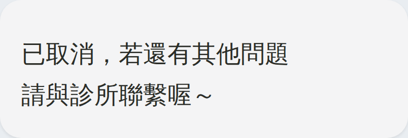
↑ 按了「是喔 要取消」。
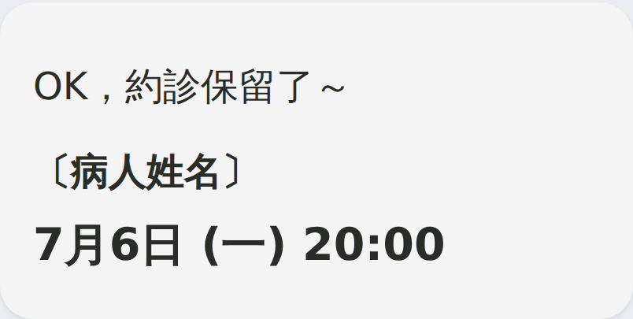
↑ 按了「按錯惹～我會去～」。要把保留下來的約診列出來，
排法和確認卡那一塊一樣，他核對的是同一組東西。
Flex 的 JSON cancel-card.json（三則）
兩顆 logo mark-nogo-white.png（是喔 要取消）／
mark-head-green.png（按錯惹）
⚠⚠⚠ 這一段真正的問題不是版面：那顆按鈕叫「預約改期」，可是它只取消
整段對話沒有一個字告訴病人「按了不會幫你排新的時間」。
診所給的真實對話裡，取消成功那一則送出之後，病人下一句就是
「可以幫我改晚上嗎」—— 他以為改期還在進行中。
這不是推論，是紀錄。
要問你們的四題
① 那顆按鈕的字改不改得動？（改成「取消約診」之類的 —— 它才是誤會的源頭）
② 兩個 action 的順序可不可以調？
把「不取消」排前面 ＝ 零成本，破壞性那顆現在站在慣性落點。
③ 期限外可不可以直接回「請來電」那一則，不要先問一次？
系統回「時間太靠近」表示它自己知道來不及，那就直接給電話，三步變一步。
④ 關鍵字／自動回應送不送得出 Flex Message？
送不出去的話這一段要退回 confirm 範本 ——
而那個容器的按鈕不換行、超過就截斷（一顆只有半個卡片寬，可用約 122px），
現在定稿的兩顆字在那裡放不下，要先收短。
⑦ 評價邀約
看診之後（後台叫它「滿意度調查」）— 完整規格
- 什麼時候
- 還不知道 —— 看診當天？隔天？每次看診都送嗎？
自動還是手動？請告訴我們。
- 送給誰
- 那一次看診的病人。⚠ 同 ④：讀的人不見得是本人
—— 現在那一則送到阿嬤的帳號，開頭卻寫「親愛的〔孫子的名字〕，您願意推薦…」。
- 誰送
- 你們
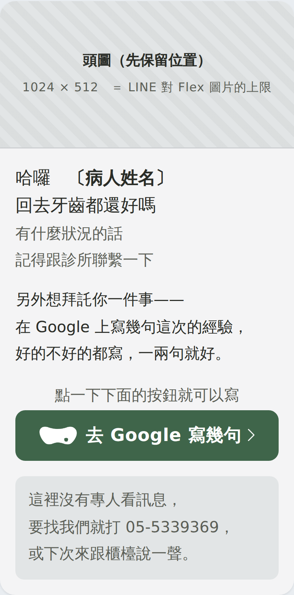
↑ 定稿的版面。⚠ 但這一則先不要送，理由在下面。
Flex 的 JSON review-card.json
頭圖 hero-review.jpg（1024×512）
三顆 logo mark-white.png／mark-chev-white.png／
mark-nogo.png
⚠⚠⚠ 這一則有法遵風險，答案出來之前新舊兩版都先擱著
現在那張卡先問「您願意推薦…嗎？」再把人分成兩條路：
願意 → 分享體驗、不願意 → 提供建議。
如果只有前者通向 Google 評論、後者是診所自己的表單，那就是
評論篩選（review gating） ——
只向滿意的人索取公開評論，據我們所知是 Google 商家檔案明文禁止的。
輕則評論被移除，重則影響整個商家檔案，
而商家檔案是這間診所最大的入口（六個月 14,973 次瀏覽、1,886 通電話）。
要問你們的三題（這一組排在所有問題的最前面）
① 「願意並分享體驗」點下去到哪裡？
② 「不願意並提供建議」點下去到哪裡？
③ 兩條路是不是只有一條通向公開評論？
⚠ 新版也還沒解掉：定稿那一張是院長逐字寫的，
上下兩塊合起來讀仍然是「願意的人去公開、不開心的人來私下」。
合規的形狀只有一種：不要先問、不要分流 ——
所有人拿到同一個邀請，私下的意見管道另外給、給所有人。
⚠ 還有一條紅線：不可以拿好處換評價（折價、抽獎、送洗牙都不行）。
⚠ 按鈕的網址我們也還沒有：Google 的「寫評論」深連結需要
Place ID，診所手上只有分享短網址。
⑧ 颱風／臨時休診
縣府宣布之後 — 完整規格
- 什麼時候
- 縣府宣布停班停課之後就發，不要等到當天早上。
- 送給誰
- 停診那一天有約診的人（不是全體公告）。
- 誰送
- 現在是診所人工：從系統抓名單、一個一個貼。
- 型別
- 現在是純文字（院長每次自己打）。做成 Flex 圖卡的版本也備好了。
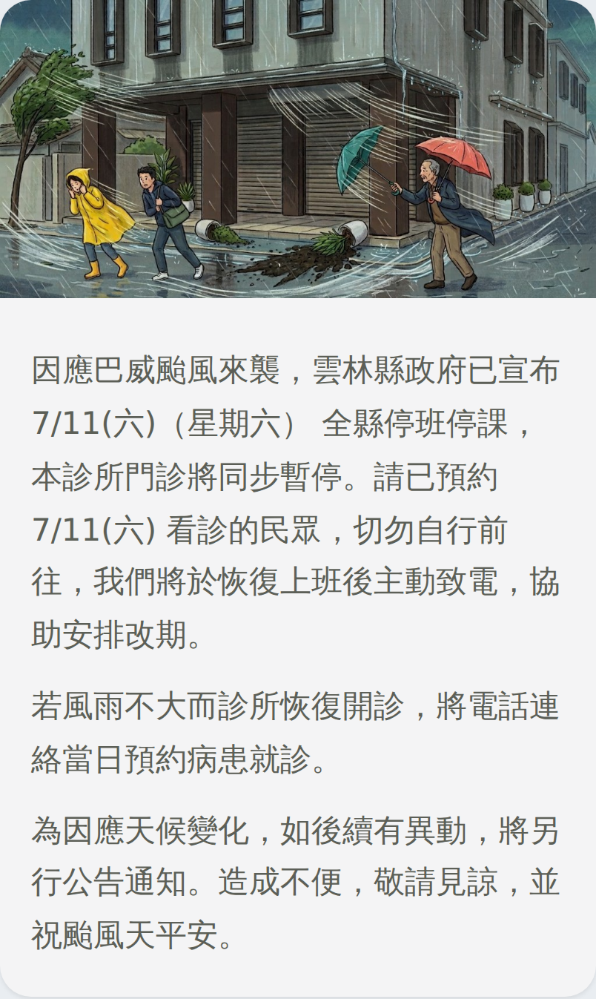
↑ Flex 圖卡版（要你們送才有）。
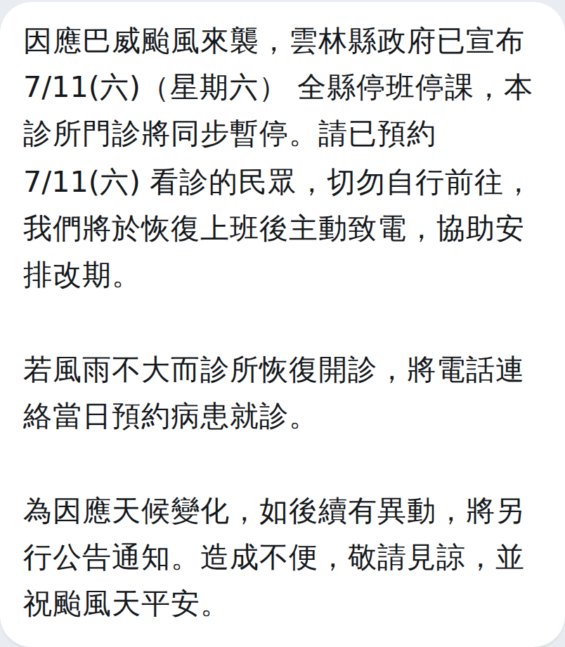
↑ 純文字版 ＝ 診所現在的做法，今天就能用。
Flex 的 JSON typhoon-card.json
頭圖 hero-typhoon.jpg（1024×512，圖卡與聊天室共用同一張）
可填欄位 {{typhoon}} {{date}}（兩處）
{{weekday}}
⚠ 這一則要談的其實不是圖，是那份名單
診所現在人工從系統抓當天有約的人、一個一個貼 ——
而你們的系統本來就知道那天有誰有約。
→ 能不能做一個「臨時休診公告」：診所選一個日期、填四個欄位，
系統自動發給那天有約的人？
這一條同時解掉「要有圖卡」和「人工貼名單」兩件。
⚠ 談不成就走純文字（今天就能用，字完全在診所手上），圖不會白畫。
⚠⚠⚠ 還有一題會出事
颱風休診那天，系統裡那些約診會變成什麼？
7/11 停診的話，48 小時提醒是 7/9 就送出去的，
而那張卡寫著「24 小時沒回應會自動取消並遞補」——
停診之後那些約診是留著，還是被系統當成取消？
這一題決定了卡上能不能寫「這次不算你失約」。
Flex Message 的硬條件
這幾條是量出來的，不知道會做出對不上的東西。
上面每一份 JSON 都已經照這些條件寫好了。
- 字級是固定 px，不是比例
xxs 11／xs 13／sm 14／md 16／
lg 19／xl 22／xxl 27button 不支援圖示，也不換行- 它只有一個
label，放不下就從尾巴截斷。
所以要「圖示＋文字」的按鈕一律做成可點的 box
（box 掛 action，裡面 image ＋ text）。
⚠ 想問一句：可點的 box 按下去，LINE 有沒有給按壓反白？
文件沒寫，我們也沒有實機驗過。
image 的 size 給的是「寬度」- 不是高度 —— 兩個長寬比不同的圖不能寫同一個數字。
（九顆浮水印的寬度各不相同就是這個原因）
- 圖檔上限 1024×1024
- HTTPS 的網址、JPEG 或 PNG。所有頭圖一律 1024×512（2:1）。
aspectRatio 寫錯不報錯aspectMode: fit 只會讓圖靜靜地縮小、四周留白。box 沒有背景圖、image 沒有 opacitybackground 只認 linearGradient。
所以浮水印是疊一個真的 image，
而它的淡度是烘進 PNG 的 alpha 裡的。- ⚠ 浮水印那個疊法是這一包唯一沒有實機驗過的東西
- 文件寫著「一個 box 的第一個子元件不可以是
absolute」，
所以我們寫成「內容 box 在前、浮水印 absolute 在後」——
但後面的元件會不會蓋在前面的上面，文件沒有明講。
麻煩用一則測試訊息驗一次。
蓋不上去的話就退回「右邊放一顆、不重疊」（那個 100% 支援）。
- 斷行一律用
\n 自己指定
- 交給自動換行會把詞劈開、或讓末行只剩一個字。
⚠ 但有變數的那一行不能手動斷行（姓名幾個字我們不知道），
那幾行只能靠 wrap: true。
- 卡片寬度
- 單張 268px、內距 14px → 按鈕可用 240px。
輪播裡一張只有 207px（單張的 77%，而左右內距一點都沒收）。
⚠ 268 是我們從診所端後台的截圖推導的，
沒有在病人手機上量過 —— 如果你們手上有實測值，麻煩給一下。
圖檔清單與網址
JSON 裡的每一個 url 都指向
https://fangren.net/assets/line/，檔案都已經放上去了，
直接取用就好。共 21 個檔、0.78MB，每一張都在 LINE 的 1024×1024 之內。
| 檔名 | 尺寸 | 哪幾則在用 |
|---|
| hero-welcome.jpg | 1024×512 | ① |
| hero-bind.jpg | 1024×512 | ③ |
| hero-remind.jpg | 1024×512 | ④ |
| hero-review.jpg | 1024×512 | ⑦ |
| hero-typhoon.jpg | 1024×512 | ⑧ |
| mark-white.png | 160×79 | ①④⑦ |
| mark-green.png | 243×79 | ① |
| mark-head-green.png | 160×79 | ⑥ |
| mark-nogo.png | 243×79 | ④⑦ |
| mark-nogo-white.png | 243×79 | ⑥ |
| mark-tel.png | 79×79 | ④ |
| mark-chev-white.png | 38×79 | ④⑦ |
| wm-r1c1-12.png | 300×300 | ⑤
（九顆浮水印，
寬度各不相同，見 wm-sizes.json） |
| wm-r1c2-12.png | 420×207 |
| wm-r1c3-12.png | 526×171 |
| wm-r2c1-12.png | 426×210 |
| wm-r2c2-12.png | 336×252 |
| wm-r2c3-12.png | 526×171 |
| wm-r3c1-12.png | 291×291 |
| wm-r3c2-12.png | 297×297 |
| wm-r3c3-12.png | 602×195 |
⚠ wm-…-12.png 的
12 是濃度（另外還產了 08 與 18 兩組，定案用 12）。
⚠ 那九顆浮水印不可以改成同寬 —— 它們有四種長寬比，
同寬的話細長那幾顆看起來會輕很多。寬度是按墨的面積算出來的。
要請你們回答的
照「答不出來會擋住什麼」排。第一組會改變要不要送、
第二組會改變成品的長相、其餘是版面與資料。
Ａ 最急
—— 可能正在出事，或會擋住整包
- 評價卡那兩顆按鈕各連到哪裡？只有一條通向公開評論嗎？（⑦）
- 約診紀錄查詢的日期能不能拿掉
maxLines: 1、改成
wrap: true？（⑤ —— 唯一一件正在出錯的）
- 這個帳號現在總共會自動送出哪幾則？
含每一則的觸發條件與送出時機 —— 我們盤到的是截圖不是清單，已經漏過兩次。
Ｂ 送得出什麼
—— 答案會改變成品的長相
- 後台的「招呼訊息」送不送得出 Flex Message？（①）
- 關鍵字／自動回應能不能改由你們的系統回 Flex？（⑥）
- 後台的自動回應開著時，會不會攔下病人打的字、不轉給你們的 webhook？（②）
- 浮水印那個
absolute 疊法在實機上蓋得上去嗎？（⑤，見上一節）
- 可點的
box 按下去有沒有按壓反白？
Ｃ 版型與資料
- 綁定成功的觸發字串改成不含電話號碼的固定字串（③）
- 「預約狀態」有幾種值、各是什麼意思、和提醒卡那顆確認鈕是不是同一個欄位（⑤）
- 日期那一格能不能拆成欄位（月／日／星期／時間）（⑤）
- 輪播最多幾張、超過怎麼辦（LINE 上限 12 張）（⑤）
- 浮水印能不能按
(月＋日) % 9 算（⑤）
- 「預約改期」那顆按鈕的字改不改得動（⑥ —— 它只取消）
confirm 的兩個 action 順序可不可以調（⑥）- 期限外可不可以直接回「請來電」那一則，不要先問一次（⑥）
- 圖文選單六格底下各是什麼、能不能改成連 fangren.net
Ｄ 會出事的（系統行為，不是版面）
- 那 24 小時的計時會不會跳過休診日？可不可以只在開診時段計時？（④）
- 被自動取消時會不會再通知病人？（④）
- 颱風停診那天，系統裡那些約診會變成什麼？（⑧）
- 能不能做一個「臨時休診公告」：選一個日期 → 自動發給那天有約的人（⑧）
Ｅ 診所自己要在後台按一次確認的
（不必你們回答）
- 一對一聊天室的「＋」裡到底有哪幾種型別
- 群發的「受眾」能不能上傳名單
- 一則自動回應底下最多掛幾個對話框（查到 3 和 5 兩種說法）
兩條紅線
① 這個帳號沒有專人即時回覆訊息。
所以任何一則上都不可以出現「有問題隨時問」那一類的承諾 ——
那是說謊，病人會在聊天室裡等一個不會來的回覆。
七則的字都已經照這條寫好了，改字的時候請一起守著。
② 不可以拿好處換評價（折價、抽獎、送洗牙都不行）。
Google 明文禁止，醫療機構在台灣還多一層招徠的疑慮。
以上七則的 Flex JSON、圖檔與逐句的理由，都在各自那一頁
（每一則標題底下的「完整規格」）。
⚠ 頁面上畫的卡片是近似，不是 LINE 自己的算繪 ——
尺寸與字級是照 LINE 的規格畫的，但最後仍然要用一則測試訊息看實機。